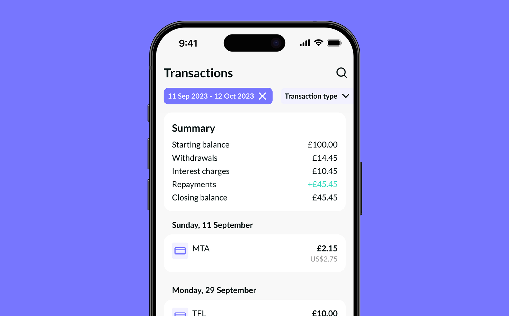
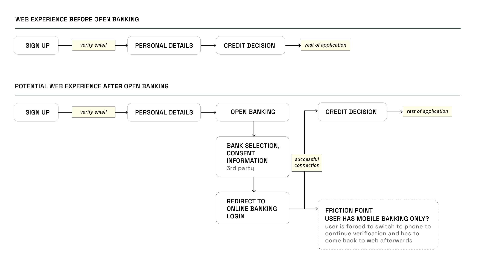
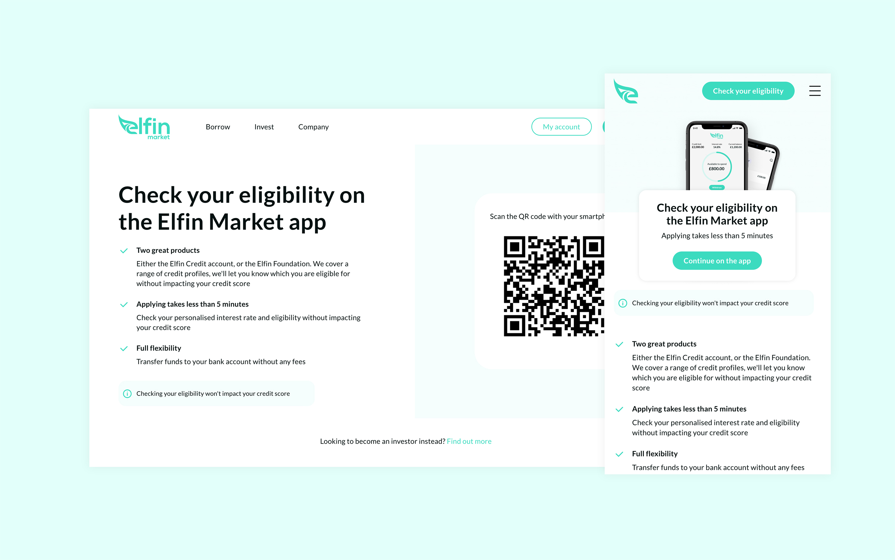
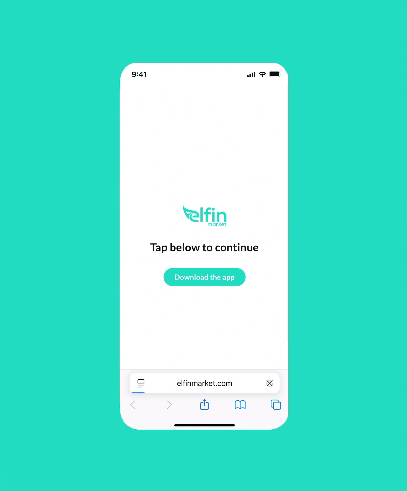
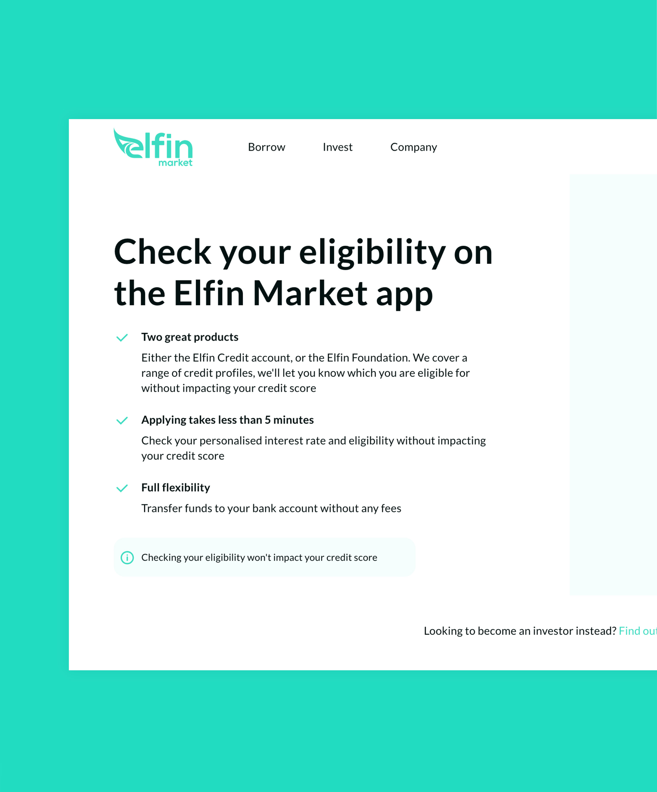

Onboarding Redesign: Shifting from Web + App to App-Only
CONTEXT
With more secure features added to the Elfin app, Elfin was slowly shifting toward app-only experiece, and Onboarding was a major turning point in this shift.

PROBLEM
Elfin Market introduced Open Banking integration to assist with borrower eligibility checks. With Open Banking now core to onboarding, maintaining separate web and app experiences no longer made sense.
-
Potential increase of drop-offs and frustration
With open banking, users would securely connect to their banking app to verify financial information, which works well on mobile but creates friction on web, where users must leave the browser and manually return

THE APPROACH
The goal shifted from providing a complete onboarding experience on web to creating a compelling entry point that drove users to download the app. We had to:
-
Show value
Clearly communicate what the eligibility check offers and why it's worth the app download
-
Reduce friction to minimum
Adding a mandatory app download step is painful. I focused on designing a clear call-to-action that worked across devices
SOLUTIONS
QR code on desktop, app store CTA on mobile
Desktop users scanned a QR code that linked to a custom redirect page. This page detected the user's device OS and automatically routed them to the correct app store, eliminating any confusion or extra steps.

Custom redirect page to detects OS and eliminates an extra step
Scanning QR code seamlessly transitioned the user from desktop to app store, aided by custom redirect page
We added brief copy and CTA to the custom redirect page in case user's system doesn't automatically redirect

SOLUTIONS
Moving away from generic messaging toward benefit-driven copy that justified the extra step users were taking
By prominently displaying the key value props (two product options, eligibility check in less than 5 minutes, no credit score impact), we showed users exactly what they'd gain, making the download feel like a worthwhile decision rather than an inconvenient detour

IMPACT